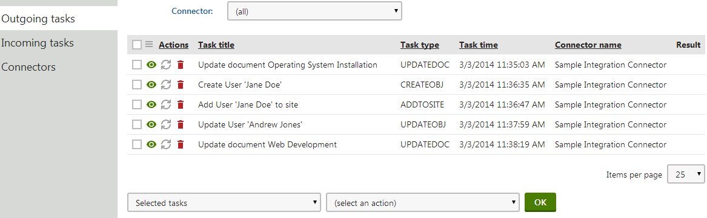
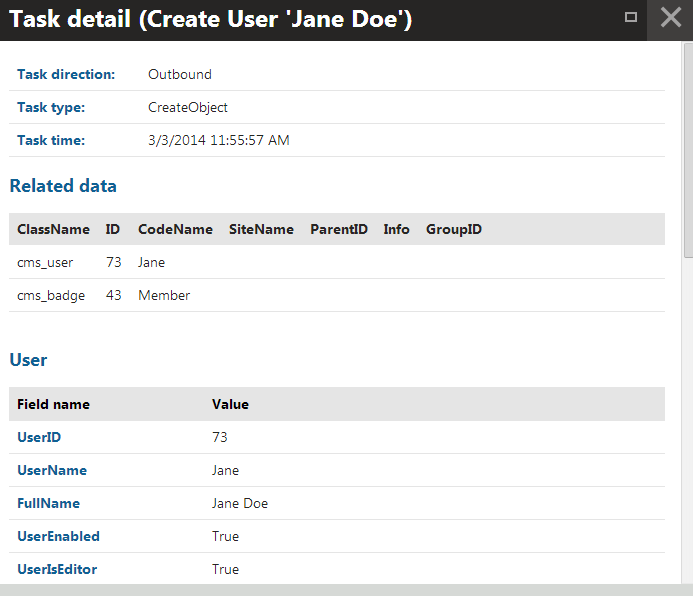

Managing integration tasks
The integration bus allows you to monitor which synchronization tasks are waiting to be processed, and view tasks that failed while being processed.
Open the Integration bus application and select the Outgoing tasks or Incoming tasks tabs.

Managing integration tasks
Automatic execution of tasks
By default, the system automatically runs integration bus tasks in the following way:
Outgoing tasks – processed separately for every connector at the end of each web request that logs new tasks. Failed tasks remain in the queue and are executed again during the next task processing (reprocessing occurs periodically during a 1 minute interval after the current processing ends, or later when a web request logs at least one new task for the given connector).
Incoming tasks – processed regularly by a scheduled task (see the Executing incoming tasks on a regular basis section below).
Manually executing failed tasks
Check whether the Enable processing of incoming tasks and Enable processing of outgoing tasks settings in Settings -> Integration -> Integration bus are enabled. Otherwise, the Synchronize ( ) action is not available.
To manually execute synchronization tasks, which were not processed:
Open the Integration bus application.
Choose the Outgoing tasks or Incoming tasks tab.
Click Synchronize ( ).
The system executes the task immediately.
Executing incoming tasks on a regular basis
Open the Scheduled tasks application.
In the Site selector, choose the (global) option.
Find the scheduled task called Process external integration tasks.
This task processes incoming synchronization tasks.
By default, the task is set to run once a day.
Edit (
 ) the task.
) the task.Set the task's scheduling options (Period, Start time, Every, Between, Days) according to the requirements of your integration.
Click Save.
The system will now execute incoming tasks based on the specified task interval.
Kentico does not provide a scheduled task for processing outgoing synchronization tasks.
Automatically executing tasks using event handlers
You can leverage the API and event handlers to automatically synchronize integration tasks according to custom requirements.
To learn more, see Automatically synchronizing staging and integration tasks.
Viewing integration task details
Click View ( ) next to integration tasks (both incoming and outgoing) to inspect the object or page data transferred within the task.
) next to integration tasks (both incoming and outgoing) to inspect the object or page data transferred within the task.

Viewing the details of an integration task